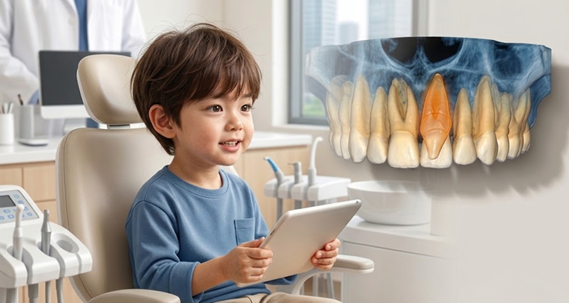
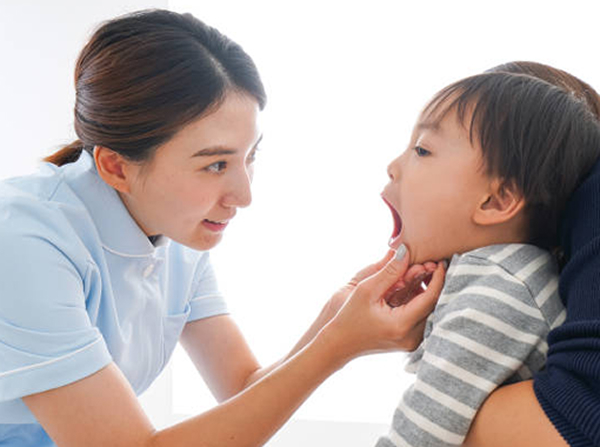

바른 치열을 위해 제때 발견이 중요한 과잉치 발치
<%=m_client_en%>
우리 아이 바른 치열, 제때 발견이 중요해요
정상 치아가 있어야 할 자리에 다른 치아가 추가로 나오게 되는 것을 과잉치라고 합니다..
그중에서도 윗턱의 앞니부근에 발생되는 것을 정중과잉치라 하며,
발치 하지 않으면 정상 치열을 망가트리고 부정교합을 만들어 교정이 필요하게 됩니다.

정중과잉치는 형태적이나 위치적으로 치아의 역할을 제대로 할 수 없는 경우가 많고, 영구치에 영향을 주거나 구강관리에 방해를 주는 경우가 많기 때문에 대부분 발치하는 것이 권장됩니다.
소아의 과잉치 발치는 비교적 짧은 시간(1시간 이내)에 발치를 할 수 있고 건강의료보험이 적용되는 지혈장치를 하루 정도 장착해 수술 후의 통증, 붓기를 완화시키고 지혈 효과를 기대할 수 있습니다.

정상적인 치아 배열을
방해하는 과잉치가
있는 경우
주변 치아의 정렬이나
발육에 문제가
생긴 경우
과잉치가 구강 내
감염 또는 통증을
유발하는 경우
정상적인 치아가
제대로 나오지
못하는 경우
앞니 사이 공간을
넓혀주는 역할을
방해하는 경우
치아 발육 저해 또는
교정 치료에
방해가 되는 경우